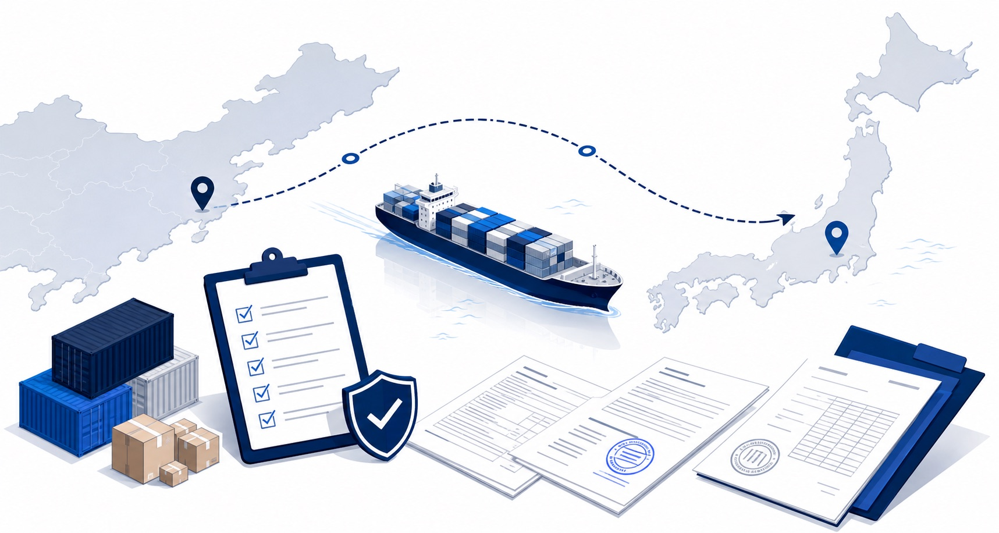

貨物情報
品名・用途・材質・写真
上海発LCL混載の事前確認デモ
〇〇株式会社は、中国から日本向けの法人物流において、貨物内容・必要書類・船社条件・CFS制約・通関リスクを事前に整理し、輸送前の不確実性を減らす国際物流取次会社です。
価格だけでは判断できない中国物流のリスクを、出荷前に確認します。
Pre-shipment Check
品名・用途・材質・写真
Invoice / Packing List / SDS
受託可否・追加書類
搬入締切・受入条件
HSコード・商品説明
船社変更・FCL化
輸送可否を断定せず、確認済み条件と追加確認事項を分けて整理します。

Visual Check
物流は「船に載せる」だけではなく、貨物内容・書類・搬入条件・通関説明がつながって初めて進みます。
Issues
見積金額だけで輸送可否を判断すると、出荷直前や搬入後に問題が発生することがあります。
Check Points
確認結果は、現時点で確認できる条件と、追加確認が必要な点を分けて整理します。
Services
貨物内容、サイズ、重量、搬入条件、CFS制約を確認し、出荷可否を整理します。
出荷地、港、納期、コンテナ重量、ドレージ条件、船社条件を確認します。
MSDS、UN38.3、製品写真、電池容量、梱包状態などを確認します。
SDS、UN No.、Class、Packing Group、船社DG枠などを確認します。
Flow
商品名、写真、サイズ、重量、出荷地、日本側仕向地を確認します。
INVOICE、PACKING LIST、SDS、MSDS、UN38.3などを確認します。
リスク、必要書類、追加確認事項、代替案を整理します。
Contact
貨物内容、書類、船社条件、CFS制約、通関リスクを確認し、現実的な輸送方法を整理します。